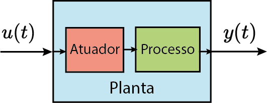

Aula 7:
Espaço de Estados - parte 1
Prof. Marcos Rogério Fernandes
02 de outubro de 2025
Ciclo do Projeto de Controle

Objetivos
Os objetivos dessa aula são entender:
- Modelos em espaço de estados;
- Discretização em espaço de estados;
- Análise de estabilidade em espaço de estados;
Sistema Dinâmico em tempo contínuo
EDO $$ \sum_{i=0}^n\alpha_i\frac{d^i y}{dt^i}=\sum_{i=0}^m\beta_i\frac{d^i u}{dt^i} $$
Abordagens

Modelo em Espaço de Estados
EDO $$ \alpha_n\frac{d^n y}{dt^n}+\alpha_{n-1}\frac{d^{n-1}y}{dt^{n-1}}+\cdots+\alpha_0y=u $$ Introduz-se variáveis de estado:
$$ x_1=y,\quad x_2=\frac{dy}{dt},\quad \cdots,\quad x_n=\frac{d^{n-1}y}{dt^{n-1}} $$
Modelo em Espaço de Estados
$$ \dot{x}(t)=Ax(t)+Bu(t) $$
Modelo em Espaço de Estados
Espaço de Estados $$ \dot{x}(t)=Ax(t)+Bu(t) $$
$$ x\in\mathbb{R}^n \to \text{vetor de estados}\\ u\in\mathbb{R}^m \to \text{vetor de entrada}\\ A\in\mathbb{R}^{n\times n}\to \text{matriz de dinâmica}\\ B\in\mathbb{R}^{n\times m}\to \text{matriz de entrada}\\ $$Modelo em Espaço de Estados
Saída: $$ y(t)=Hx(t)+Du(t) $$
$$ y\in\mathbb{R}^p \to \text{vetor de saída}\\ H\in\mathbb{R}^{p\times n}\to \text{matriz de saída}\\ D\in\mathbb{R}^{p\times m}\to \text{matriz de transmissão direta}\\ $$Modelo em Espaço de Estados (Linear)
$$ \dot{x}(t)=Ax(t)+Bu(t)\\ y(t)=Hx(t)+Du(t) $$
Modelo em Espaço de Estados (Linear)
Exemplo
$$ \ddot{y}+2\xi\omega_n\dot{y}+\omega_n^2 y = \omega_n^2 u $$
$$ x_1=y;\quad x_2=\dot{y}=\dot{x}_1; \quad\dot{x}_2=\ddot{y}. $$Exemplo
$$ \ddot{y}+2\xi\omega_n\dot{y}+\omega_n^2 y = \omega_n^2 u $$
$$ x_1=y;\quad x_2=\dot{y}=\dot{x}_1; \quad\dot{x}_2=\ddot{y}. $$ Logo, $$ \begin{bmatrix} \dot{x}_1\\ \dot{x}_2 \end{bmatrix}=\begin{bmatrix} 0 & 1\\ -\omega_n^2 & -2\xi\omega_n \end{bmatrix}\begin{bmatrix} x_1\\ x_2 \end{bmatrix}+\begin{bmatrix} 0\\ \omega_n^2 \end{bmatrix}u $$Modelo em Espaço de Estados (Não-Linear)
$$ \dot{x}(t)=f(x(t),u(t))\\ y(t)=h(x(t),u(t)) $$
Pêndulo Invertido móvel

$$ (M+m)\ddot{x}-ml\ddot{\theta}\cos(\theta)+ml\dot{\theta}^2\sin(\theta)=F\\ l\ddot{\theta}-\ddot{x}\cos(\theta)-g\sin(\theta)=0 $$
Modelo em Espaço de Estados (Linearizado)
Discretização do Modelo em Espaço de Estados
$$ \dot{x}(t)=Ax(t)+Bu(t)\\ $$
Equivalente em tempo discreto:$$ x_{k+1}=A_dx_k+B_du_k\\ $$
Discretização via Integração
$$ \dot{x}=ax,\quad x\in\mathbb{R} $$
Solução:$$ x(t)=e^{a(t-t_0)}x(t_0),\quad t\in[t_0,T] $$
em que $e^x=1+x+\frac{1}{2}x^2+\cdots$Discretização via Integração
$$ \dot{x}=ax+bu,\quad x,u\in\mathbb{R} $$
Solução:$$ x(t)=e^{a(t-t_0)}x(t_0)+\int_0^t e^{a(t-\tau)}b u(\tau)d\tau,\quad t\in[t_0,T] $$
Discretização via Integração
$$ \dot{x}=Ax+Bu,\quad x\in\mathbb{R}^n,u\in\mathbb{R}^m $$
Solução:$$ x(t)=e^{A(t-t_0)}x(t_0)+\int_0^t e^{A(t-\tau)}B u(\tau)d\tau,\quad t\in[t_0,T] $$
em que $e^X=I+X+\frac{1}{2}X^2+\cdots$Discretização via Integração
$$ x(t)=e^{A (t-t_0)}x(t_0)+\int_{t_0}^t e^{A(t-\tau)}Bu(\tau)d\tau,\quad t\in[t_0,T] $$
Considere$$ x(kT_s)=x_k,\quad t \in [kT_s,(k+1)T_s] $$ ou seja, $ t_0=kT_s,\quad T=(k+1)T_s $
Discretização via Integração
$$ x_{k+1}=e^{A T_s}x_k+\int_{kT_s}^{(k+1)T_s} e^{A((k+1)T_s-\tau)}Bu(\tau)d\tau $$
Suponha que $$ u(\tau)=u_k, \forall \tau \in[kT_s,(k+1)T_s] \text{ (ZOH)} $$Discretização via Integração
$$ x_{k+1}=e^{A T_s}x_k+\int_{kT_s}^{(k+1)T_s} e^{A((k+1)T_s-\tau)}d\tau Bu_k $$
Suponha que $$ u(\tau)=u_k, \forall \tau \in[kT_s,(k+1)T_s] \text{ (ZOH)} $$Discretização via Integração
$$ x_{k+1}=e^{A T_s}x_k+\Bigl(\int_{0}^{T_s} e^{A\eta}d\eta B\Bigr)u_k $$
Suponha que $$ u(\tau)=u_k, \forall \tau \in[kT_s,(k+1)T_s] \text{ (ZOH)} $$Discretização via Integração
$$ x_{k+1}=\underbrace{e^{A T_s}}_{A_d}x_k+\underbrace{\Bigl(\int_{0}^{T_s} e^{A\eta }d\eta B\Bigr)}_{B_d}u_k $$
Suponha que $$ u(\tau)=u_k, \forall \tau \in[kT_s,(k+1)T_s] \text{ (ZOH)} $$Discretização via Integração
$$ x_{k+1}=A_dx_k+B_du_k $$
em que $$ \begin{aligned} A_d&=e^{AT_s}\\ B_d&=\int_0^{T_s} e^{A\eta}d\eta B \end{aligned} $$Discretização via Integração
$$ \int_0^t e^{a\eta}d\eta = \frac{1}{a}(e^{at}-1) $$ com $a\in\mathbb{R}, a\neq 0$
Discretização via Integração
$$ \int_0^t e^{A\eta}d\eta = A^{-1}(e^{At}-I)=(e^{At}-I)A^{-1} $$ com $A\in\mathbb{R}^{n\times n}$ e $A$ não-singular.
Discretização via Integração
Se $A$ for não-singular (existe $A^{-1}$), então $$ \begin{aligned} B_d&=\int_0^{T_s} e^{A\eta}d\eta B\\&=A^{-1}(e^{AT_s}-I)B\\&=(e^{AT_s}-I)A^{-1}B \end{aligned} $$
Discretização via Integração
Se $A$ for singular (não existe $A^{-1}$), então $$ \begin{aligned} B_d&=\int_0^{T_s} e^{A\eta}d\eta B\\&= \int_0^{T_s} (I+A\eta+\frac{1}{2!}A^2\eta^2+\frac{1}{3!}A^3\eta^3+\cdots)d\eta B \end{aligned} $$
Discretização via Integração
Se $A$ for singular (não existe $A^{-1}$), então $$ \begin{aligned} B_d&=\int_0^{T_s} e^{A\eta}d\eta B\\&= \int_0^{T_s} (I+A\eta+\frac{1}{2!}A^2\eta^2+\frac{1}{3!}A^3\eta^3+\cdots)d\eta B\\ =&\Bigl(IT_s+A \frac{T_s^2}{2}+\frac{1}{2!}A^2 \frac{T_s^3}{3}+\frac{1}{3!}A^3 \frac{T_s^4}{4}+\cdots\Bigr)B \end{aligned} $$
Discretização da Saída
$$ y(t)=Hx(t)+Du(t) $$
Portanto, o equivalente em tempo discreto basta tomar$$ t=kT_s $$
Discretização da Saída
$$ y(kT_s)=Hx(kT_s)+Du(kT_s) $$
ou seja, o equivalente em tempo discreto é$$ y_k=Hx_k+Du_k $$
Modelo em espaço de estados em tempo discreto
$$ \begin{aligned} x_{k+1}&=A_dx_k+B_du_k\\ y_k&=Hx_k+Du_k \end{aligned} $$
em que $$ A_d=e^{AT_s},\quad B_d=\int_0^{T_s} e^{A\eta}d\eta B $$Modelo em espaço de estados em tempo discreto
Exemplo no matlab
Equivalente em tempo discreto com $T_s=0.1s$: $$x_{k+1}=A_dx_k+B_du_k$$
Solução da equação de estados
k=1; $$ \begin{aligned} x_1=A_dx_0+B_d u_0 \end{aligned} $$
Solução da equação de estados
k=2; $$ \begin{aligned} x_1&=A_dx_0+B_d u_0\\ x_2&=A_dx_1+B_d u_1=A_d^2x_0+A_dB_du_0+B_du_1 \end{aligned} $$
Solução da equação de estados
k=3; $$ \begin{aligned} x_1&=A_dx_0+B_d u_0\\ x_2&=A_dx_1+B_d u_1=A_d^2x_0+A_dB_du_0+B_du_1\\ x_3&=A_dx_2+B_d u_2=A_d^3x_0+A_d^2B_du_0+A_dB_du_1+B_du_2 \end{aligned} $$
Solução da equação de estados
k=N; $$ \begin{aligned} x_1&=A_dx_0+B_d u_0\\ x_2&=A_dx_1+B_d u_1=A_d^2x_0+A_dB_du_0+B_du_1\\ x_3&=A_dx_2+B_d u_2=A_d^3x_0+A_d^2B_du_0+A_dB_du_1+B_du_2\\ \vdots\\ x_N&=A_dx_{N-1}+B_d u_{N-1}=A_d^Nx_0+\sum_{j=0}^{N-1}A_d^{N-j-1}B_d u_j \end{aligned} $$
Solução da equação de estados em tempo discreto
$$ \begin{aligned} x_k=A_d^kx_0+\sum_{j=0}^{k-1}A_d^{k-j-1}B_d u_j, \quad k=1,2,3,\ldots \end{aligned} $$
Solução da equação de saída
Saída: $$ \begin{aligned} y_k&=Hx_k+Du_k \end{aligned} $$
Solução da equação de saída
Saída: $$ \begin{aligned} y_k&=Hx_k+Du_k\\ &=H\Bigl(A_d^kx_0+\sum_{j=0}^{k-1}A_d^{k-j-1}B_d u_j\Bigr)+Du_k \end{aligned} $$
Solução da equação de saída
Saída: $$ \begin{aligned} y_k&=Hx_k+Du_k\\ &=H\Bigl(A_d^kx_0+\sum_{j=0}^{k-1}A_d^{k-j-1}B_d u_j\Bigr)+Du_k\\ &=HA_d^kx_0+H\sum_{j=0}^{k-1}A_d^{k-j-1}B_d u_j+Du_k \end{aligned} $$
Solução da equação de estados em tempo discreto
Saída: $$ \begin{aligned} y_k=HA_d^kx_0+H\sum_{j=0}^{k-1}A_d^{k-j-1}B_d u_j+Du_k, \\k=1,2,3,\ldots \end{aligned} $$
Exemplo no matlab
Equivalente em tempo discreto com $T_s=0.1s$: $$x_{k+1}=A_dx_k+B_du_k$$
Simular para $x_0=[10;10]$ e $u_k=0, T=10$Estabilidade
O sistema representado em espaço de estados é estável em tempo discreto se $$ \begin{aligned} |\lambda\{A_d\}| < 1 \end{aligned} $$
Estabilidade
$ \begin{aligned} |\lambda\{A_d\}| < 1 \end{aligned} $

Estabilidade no sentido de Lyapunov
Se existir uma função $V:\mathbb{R}^n\to \mathbb{R}$ tal que $$ V(x_k)>0,\quad \forall x_k\in\mathbb{R}^n \\ V(x_k)=0 \Leftrightarrow x_k=0 $$ e $$ V(x_{k+1})-V(x_{k}) \le 0 $$ então o sistema é estável.
Estabilidade no sentido de Lyapunov
Se existir uma função $V:\mathbb{R}^n\to \mathbb{R}$ tal que $$ V(x_k)>0,\quad \forall x_k\in\mathbb{R}^n \\ V(x_k)=0 \Leftrightarrow x_k=0 $$ e $$ V(x_{k+1})-V(x_{k}) < 0 $$ então o sistema é assintoticamente estável.
Estabilidade no sentido de Lyapunov
Função de energia:
Para sistemas lineares, a função de energia
$$ V(x_k)=x_k^\trp P x_k,\quad P=P^\trp \succeq 0 $$
é necessária e suficiente para certificar a estabilidade!Estabilidade no sentido de Lyapunov
Função de energia:
Para sistemas lineares, a função de energia
$$ V(x_k)=x_k^\trp P x_k,\quad P=P^\trp \succ 0 $$
é necessária e suficiente para certificar a estabilidade assintótica!Estabilidade no sentido de Lyapunov
$$ V(x_{k+1})-V(x_k)=x_{k+1}^\trp Px_{k+1}-x_k^\trp Px_k < 0 $$ Uma vez que, $$ x_{k+1}=A_dx_k $$ então $$ (A_dx_k)^\trp P(A_dx_k)-x_k^\trp Px_k < 0 $$
Estabilidade no sentido de Lyapunov
$$ V(x_{k+1})-V(x_k)=x_{k+1}^\trp Px_{k+1}-x_k^\trp Px_k < 0 $$ Uma vez que, $$ x_{k+1}=A_dx_k $$ então $$ x_k^\trp A_d^\trp P A_dx_k-x_k^\trp Px_k < 0 $$
Estabilidade no sentido de Lyapunov
$$ V(x_{k+1})-V(x_k)=x_{k+1}^\trp Px_{k+1}-x_k^\trp Px_k < 0 $$ Uma vez que, $$ x_{k+1}=A_dx_k $$ então $$ x_k^\trp(A_d^\trp P A_d-P)x_k < 0 $$
Estabilidade no sentido de Lyapunov
$$ V(x_{k+1})-V(x_k)=x_{k+1}^\trp Px_{k+1}-x_k^\trp Px_k < 0 $$ Uma vez que, $$ x_{k+1}=A_dx_k $$ então $$ A_d^\trp PA_d -P \prec 0 $$
Estabilidade no sentido de Lyapunov
Um sistema em espaço de estados em tempo discreto é assintoticamente estável se e somente se existir uma matriz $P=P^\trp \in\mathbb{R}^{n\times n}$ tal que
$$ P\succ 0 \\ A_d^\trp PA_d -P \prec 0 $$
Desigualdade Matricial Linear (LMI)Estabilidade no sentido de Lyapunov
Um sistema em espaço de estados em tempo discreto é assintoticamente estável se e somente se existir uma matriz $P=P^\trp\in\mathbb{R}^{n\times n}$ tal que
$$ P\succ 0 \\ A_d^\trp PA_d -P = -Q, \quad Q\succ 0 $$
Sistema linear de equações!Exemplo no matlab
$$ x_{k+1}=\begin{bmatrix} 1 & -2 \\ 2 & 1 \end{bmatrix}x_k+\begin{bmatrix} 1 \\ 2 \end{bmatrix}u_k $$
Análise a estabilidade desse sistema:
- via autovalores de $A_d$ (eig);
- via Lyapunov com $Q=I$ (dlyap).
Próxima aula teórica
Projeto de controladores em Espaço de estados